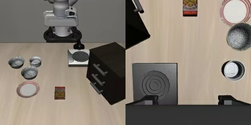

ROBOT LEARNING · EXPERIMENT NOTE
SmolVLA
机器人操作实验
从示范数据、策略微调到闭环评测，记录每一步可复现的实验与证据。
正在读取实验记录
数据样例

真实实验画面待生成
结果随实验记录更新任务范围
—待记录
训练 / 留出轨迹
—待记录
训练帧
—待记录
训练随机种子
—待记录
01 / EXPERIMENTS
训练成本与任务表现
把模型适配的成本，与机器人真正完成任务的表现放在一起看。
正式实验结果待完成
可以切换到“全部记录”，查看已经生成的流程检查。| 实验方案 | 更新步数 | 可训练参数 | 记录显存 | 训练耗时 | 闭环成功率 |
|---|
记录显存为已保存日志中的分配显存最大值。成功率以闭环评测为准；缺失值不等同于零。
推理采样与时延
展示已记录的模型推理耗时，中位数与P95以毫秒计。
查看逐任务评测
流程检查用于确认训练与评测链路可运行，不作为模型能力或方法优劣的结论。
训练损失记录
查看原图 ↗02 / IN THE LOOP
看动作，也看失败
保留真实回合。成功与失败，都是理解策略能力边界的证据。
闭环视频待生成
有可用视频后，会与实验方案、任务和结果一起出现在这里。03 / REPRODUCIBLE BY DESIGN
从输入到反馈
固定比较协议，逐项改变变量，让每个观察都能追溯到具体设置。
01图像 · 指令 · 状态轨迹数据与观测
02SmolVLA策略适配与动作生成
03动作序列执行后重新观察
04仿真闭环成功判定与失败分析
问题与对照实验
对照实验记录待补充。
04 / FINDINGS & EVIDENCE
结论需要证据，也需要范围
当前观察
实验观察将在结果复核后补充。
从失败回合提出可验证的问题
区分画面中直接可见的观察与仍需实验验证的解释。点击画面可查看完整原图。
回到原始记录
下载结果 JSON可下载的实验记录待补充。